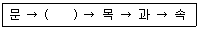

유기농업기능사 (2016-07-10 기출문제)
1과목: 작물재배
1. 잎의 가장자리에 있는 수공에서 물이 나오는 현상은?
- 일액현상
- 일비현상
- 증산작용
- Apoplast
(정답률: 80%)

2. 작물이 받는 냉해의 종류가 아닌 것은?
- 생태형냉해
- 지연형냉해
- 병해형냉해
- 장해형냉해
(정답률: 68%)
3. 장일식물로만 바르게 나열된 것은?
- 도꼬마리, 국화
- 들깨, 콩
- 시금치, 담배
- 양파, 상추
(정답률: 65%)
4. 수해에 대한 설명으로 틀린 것은?
- 수해를 예방하기 위해 볏과 목초, 피, 수수 등 침수에 강한 작물을 선택한다.
- 수온이 높으면 호흡기질 의 소모가 빨라 피해가 크다.
- 벼의 침수피해는 수잉기 보다 분얼 초기에 심하다.
- 질소질 비료를 많이 주면 관수해가 커진다.
(정답률: 74%)
5. 토양입단 형성에 알맞은 방법이 아닌 것은?
- 유기물 시용
- 석회 시용
- 토양의 피복
- 질산나트륨 시용
(정답률: 73%)
6. 포장동화능력을 지배하는 요인으로만 옳게 나열한 것은?
- 엽면적, 광포화점, 광보상점
- 총엽면적, 수광능률, 평균동화능력
- 광량, 광의 강도, 엽면적
- 착색도, 광량, 엽면적
(정답률: 74%)
7. 지력을 향상시키는 방법이 아닌 것은?
- 토심을 깊게 한다.
- 단립(團粒)구조를 만든다.
- 토양 pH는 중성으로 만든다.
- 토성은 사양토 ~ 식양토로 만든다.
(정답률: 77%)
8. 광합성에 가장 유효한 반응은?
- 녹색광
- 황색광
- 자색광
- 적색광
(정답률: 83%)
9. 작물의 적산온도에 대한 설명으로 틀린 것은?
- 작물의 생육시기와 생육기간에 따라 차이가 있다.
- 작물의 생육이 가능한 범위의 온도를 나타낸다.
- 작물이 일생을 마치는데 소요되는 총온량을 표시한다.
- 작물의 발아로부터 성숙에 이르기까지의 0℃ 이상의 일평균기온을 합산한 온도이다.
(정답률: 51%)
10. 식물의 굴광현상에 가장 유효한 광은?
- 자색광
- 청색광
- 적색광
- 적외선
(정답률: 73%)
11. 작물의 요수량에 관한 설명으로 틀린 것은?
- 작물의 건물 1g을 생산하는데 소비된 수분량이다.
- 증산계수 또는 증산능률이라고도 한다.
- 요수량이 작은 작물이 가뭄에 강하다.
- 작물별로 수분의 절대소비량을 표기하는 것은 아니다.
(정답률: 58%)
12. 작물수량을 증가시키는 3대 조건이 아닌 것은?
- 유전성이 좋은 품종 선택
- 알맞은 재배환경
- 적합한 재배기술
- 상품성이 우수한 작물 선택
(정답률: 81%)
13. 뿌리에서 가장 왕성하게 수분흡수가 일어나는 부위는?
- 근모부
- 뿌리골무
- 생장점
- 신장부
(정답률: 71%)
14. 탄산시비의 목적으로 가장 적합한 것은?
- 호흡작용의 증대
- 증산작용의 증대
- 광합성의 증대
- 비료흡수의 촉진
(정답률: 62%)
15. 식물의 필수 양분 중 미량원소가 아닌 것은?
- Fe
- B
- N
- Cl
(정답률: 66%)
16. 토양 속에서 작물뿌리가 수분을 흡수하는 기구를 나타낸 관계식으로 옳은 것은? (a: 세포의 삼투압, m: 세포의 팽압(막압), t: 토양의 수분보유력, a′: 토양용액의 삼투압)
- (a – m) - (t + a′)
- (a – m) + (t + a′)
- (a + m) - (t + a′)
- (a + m) + (t + a′)
(정답률: 59%)
17. 고추와 토마토의 일장 감응형은?
- 장일성
- 중일성
- 단일성
- 정일성
(정답률: 62%)
18. 식물이 주로 이용하는 토양수분의 형태는?
- 결합수
- 흡습수
- 지하수
- 모관수
(정답률: 79%)
19. 식물의 분류 중 ( )안에 들어 갈 용어는?

- 종
- 강
- 계통
- 아목
(정답률: 75%)
20. 작물의 분화과정을 옳게 나열한 것은?
- 변이발생 → 순화 → 격리 → 도태
- 변이발생 → 격리 → 적응 → 도태
- 변이발생 → 도태 → 격리 → 적응
- 변이발생 → 도태 → 순화 → 격리
(정답률: 54%)
2과목: 토양관리
21. 다음 중 토양의 양분 보유력을 가장 증대시킬 수 있는 영농방법은?
- 부식질 유기물의 시용
- 질소비료의 시용
- 모래의 객토
- 경운의 실시
(정답률: 66%)
22. 화성암을 구성하는 주요 광물이 아닌 것은?
- 방해석
- 각섬석
- 석영
- 운모
(정답률: 58%)
23. 지하수위가 높은 저습지나 배수 불량지에서 환원 상태가 발달하면서 청회색을 띠는 토층이 발달하는 토양 생성 작용은?
- podzolization
- salinization
- alkalization
- gleywztion
(정답률: 63%)
24. 토양 속 NH4+ → NO2- → NO3-는 무슨 작용인가?
- 암모니아화작용
- 질산화작용
- 탈질작용
- 유기화작용
(정답률: 66%)
25. 논토양과 밭토양의 차이점으로 틀린 것은?
- 논토양은 무기양분의 천연공급량이 많다.
- 논토양은 유기물 분해가 빨라 부식함량이 적다.
- 밭토양은 통기상태가 양호하며 산화상태이다.
- 밭토양은 산성화가 심하여 인산 유효도가 낮다.
(정답률: 58%)
26. 저위생산지 개량방법으로 옳은 것은?
- 습답은 점토가 많은 산적토를 객토한다.
- 누수답은 암거배수 등으로 배수개선을 한다.
- 노후화답을 개량하기 위해 석고를 시용한다.
- 미숙답은 심경하고 다량의 볏짚을 시용한다.
(정답률: 50%)
27. 토양유기물의 탄질률에 따른 질소의 행동으로 틀린 것은?
- 탄질률이 높은 유기물을 주면 질소의 공급효과가 높다.
- 시용하는 유기물의 탄질률이 높으면 질소가 일시적으로 결핍된다.
- 콩과식물을 재배하면 질소의 공급에 유리하다.
- 토양 유기물의 분해는 탄질률에 따라 크게 달라진다.
(정답률: 41%)
28. 토양의 환원상태를 촉진하지 않는 것은?
- 미숙퇴비 살포
- 투수성 불량
- 토양의 수분 건조
- 미생물 활동 증가
(정답률: 40%)
29. 토양단면에서 용탈흔적이 가장 명료한 토층은?
- O층
- E층
- A층
- C층
(정답률: 51%)
30. 토양 중 인산에 대한 설명으로 옳은 것은?
- 토양 pH가 5~6의 범위에서는 H2PO4-의 형태로 존재한다.
- 토양의 pH가 중성보다 낮아질수록 용해도가 증가한다.
- 토양 pH가 8이상의 범위에서는 H3PO4의 형태로 존재한다.
- CEC가 클수록 흡착되는 양이 많아진다.
(정답률: 47%)
31. 토양오염에 대한 설명으로 틀린 것은?
- 질소와 인산비료의 과다시용은 토양오염을 유발할 수 있다.
- 농경지 농약의 살포는 토양오염을 유발할 수 있다.
- 일반적으로 중금속의 흡착은 pH가 높을수록 적어진다.
- 방사성 물질은 비점오염원이다.
(정답률: 58%)
32. 토양오염원을 분류할 때 비점오염원에 해당하는 것은?
- 산성비
- 대단위 가축사육장
- 유독물저장시설
- 폐기물매립지
(정답률: 67%)
33. 시설재배 토양에서 염류농도를 감소시키는 방법으로 틀린 것은?
- 담수에 의한 제염
- 제염작물 재배
- 객토 및 암거배수에 의한 토양개량
- 돈분퇴비의 시용
(정답률: 71%)
34. 토양미생물에 대한 설명으로 틀린 것은?
- 균근류는 통기성과 투수성을 증가시킨다.
- 화학종속영양세균의 주 에너지원은 빛이다.
- 토양 유기물을 분해시켜 부식으로 만든다.
- 조류는 광합성을 하고 산소를 방출한다.
(정답률: 58%)
35. 수평배열의 토괴로 구성된 구조이며, 투수성에 가장 불리한 토양구조는?
- 판상
- 입상
- 주상
- 괴상
(정답률: 59%)
36. 토양오염 우려기준 물질에 포함되지 않는 것은?
- Cd
- Al
- Hg
- As
(정답률: 65%)
37. 다음 중 공생질소고정균은?
- Azotobacter
- Rhizobium
- Beijerincria
- Derxia
(정답률: 60%)
38. 피복작물에 의한 토양보전 효과로 볼 수 있는 것은?
- 토양의 유실 증가
- 토양 투수력 감소
- 빗방울의 토양 타격강도 증가
- 유거수량의 감소
(정답률: 50%)
39. 물에 의한 침식을 가장 받기 쉬운 토성은?
- 식토
- 양토
- 사토
- 사양토
(정답률: 57%)
40. 토양 침식에 영향을 주는 요인에 대한 설명으로 틀린 것은?
- 내수성이 입단이 적고 투수성이 나쁜 토양이 침식되기 쉽다.
- 경사도가 크고 경사길이가 길수록 침식이 많이 일어난다.
- 강우량이 강우 강도 보다 토양 침식에 대한 영향이 크다.
- 작물의 종류, 경운 시기와 방법에 따라 침식량이 다르다.
(정답률: 61%)
3과목: 유기농업일반
41. 유기농업 생산체계의 목표가 아닌 것은?
- 작물 및 축산물 생산성 최대화를 추구한다.
- 토양미생물의 활동을 촉진하는 농업을 추구한다.
- 생물의 다양성을 증진하는데 목표를 둔다.
- 자원이나 물질의 재활용을 극대화한다.
(정답률: 62%)
42. 다음 중 자가불화합성을 이용하는 것으로만 나열된 것은?
- 당근, 상추
- 고추, 쑥갓
- 양파, 옥수수
- 무, 양배추
(정답률: 56%)
43. 유기농업에서 이용할 수 있는 식물 추출 자재가 아닌 것은?
- 님제제
- 제충국
- 바이오밥
- 카보후란
(정답률: 54%)
44. 다음 중 포식성 곤충에 해당하는 것은?
- 팔라시스이리응애
- 침파리
- 고치벌
- 꼬마벌
(정답률: 67%)
45. 유기축산물의 축사 및 방목에 대한 요건으로 틀린 것은?
- 축사·농기계 및 기구 등은 청결하게 유지하고 소독함으로써 교차감염과 질병감염체의 증식을 억제하여야 한다.
- 축사의 바닥은 부드러우면서도 미끄럽지 아니하고, 청결 및 건조하여야 하며, 충분한 휴식공간을 확보하여야 하고, 휴식공간에서는 건조깔짚을 깔아 주어야한다.
- 가금류의 축사는 짚·톱밥·모래 또는 야초와 같은 깔짚으로 채워진 건축공간이 제공되어야 하며, 산란계는 산란상자를 설치하여야 한다.
- 번식돈은 임신 말기 또는 포유기간을 제외하고는 군사를 하여야 하고, 자돈 및 육성돈은 케이지에서 사육하지 아니할 것. 다만, 자돈 압사 방지를 위하여 포유기간에는 모돈가 조기 융한 자돈의 생체중이 50킬로그램까지는 케이지에서 사육할 수 있다.
(정답률: 77%)
46. 다음 중 시설의 토양관리에서 객토를 실시하는 이유로 거리가 먼 것은?
- 미량원소의 공급
- 토양침식 효과
- 염류집적의 제거
- 토양물리성 개선
(정답률: 62%)
47. 고구마 수확물의 상처에 유상조직인 코르크층을 발달시켜 병균의 침입을 방지하는 조치는?
- 예냉
- 큐어링
- CA
- 프라이밍
(정답률: 75%)
48. (A × B) × C와 같이 F1과 제3품종을 교배하는 것은?
- 다계교배
- 복교배
- 3원교배
- 단교배
(정답률: 73%)
49. 산도(pH)가 중성인 토양은?
- pH 3~4
- pH 4~5
- pH 6~7
- pH 9~10
(정답률: 77%)
50. 다음 중 병해충 방제를 위한 경종적 방제법에 해당하지 않는 것은?
- 과실에 봉지를 씌워서 차단
- 토지의 선정
- 품종의 선택
- 생육시기의 조절
(정답률: 65%)
51. 인공교배하여 F1을 만들고 F2부터 매세대 개체선발과 계통재배 및 계통선발을 반복하면서 우량한 유전자형의 순계를 육성하는 육종방법은?
- 파생계통육종
- 계통육종
- 여교배육종
- 집단육종
(정답률: 63%)
52. 일반농가가 유기축산으로 전환할 때 전환기간으로 틀린 것은?
- 식육 생산용 한우는 입식후 3개월 이상
- 시유 생산용 젖소는 90일 이상
- 식육 생산용 돼지는 최소 5개월 이상
- 알 생산용 산란계는 입식 후 3개월 이상
(정답률: 58%)
53. 시설 내의 환경특이성에 관한 설명으로 틀린 것은?
- 토양의 건조해지기 쉽다.
- 공중습도가 높다.
- 탄산가스가 높다.
- 광분포가 불균일하다.
(정답률: 51%)
54. 한 포장 내에서 위치에 따라 종자, 비료, 농약 등을 달리함으로써 환경문제를 최소화하면서 생산성을 최대로 하려는 농업은?
- 자연농업
- 생태농업
- 정밀농업
- 유기농업
(정답률: 55%)
55. 다음중 작물의 요수량이 가장 큰 것은?
- 옥수수
- 클로버
- 보리
- 기장
(정답률: 61%)
56. 유기사료에 첨가해도 되는 것은?
- 가축의 대사기능 촉진을 위한 합성화합물
- 비단백태질소화합물
- 성장촉진제
- 순도 99% 이상인 골분
(정답률: 71%)
57. 경축순환농업으로 사육하지 않은 농장에서 유래한 퇴비를 유기농업에 사용할수 있는 충족 조건은?
- 퇴비화 과정에서 퇴비더미가 35~50℃를 유지하면서 10일간이상 경과되어야 한다.
- 퇴비화 과정에서 퇴비더미가 55~75℃를 유지하면서 15일간이상 경과되어야 한다.
- 퇴비화 과정에서 퇴비더미가 80~95℃를 유지하면서 10일간이상 경과되어야 한다.
- 퇴비화 과정에서 퇴비더미가 80~95℃를 유지하면서 15일간이상 경과되어야 한다.
(정답률: 64%)
58. 병해충종합관리의 기본 개념을 실현하기 위한 기본원칙으로 틀린 것은?
- 한 가지 방법으로 모든 것을 해결하려는 생각은 버린다.
- 병해충 발생이 경제적으로 피해가 되는 밀도에서만 방제한다.
- 병해충의 개체군을 박멸해야 한다.
- 농업생태계에서 병해충군의 자연조절기능을 적극적으로 활용한다.
(정답률: 64%)
59. 유기농에서 예방적 잡초제어의 방법으로 적절하지 못한 것은?
- 초생재배
- 윤작
- 파종밀도 조절
- 무경운
(정답률: 70%)
60. 유기축산물의 유기배합사료 중 식물성 단백질류에 해당하는 것으로만 나열된 것은?
- 옥수수, 보리
- 밀, 수수
- 호밀, 귀리
- 들깻묵, 아마박
(정답률: 65%)